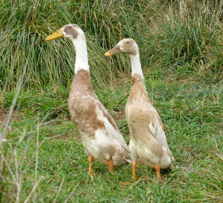
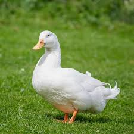
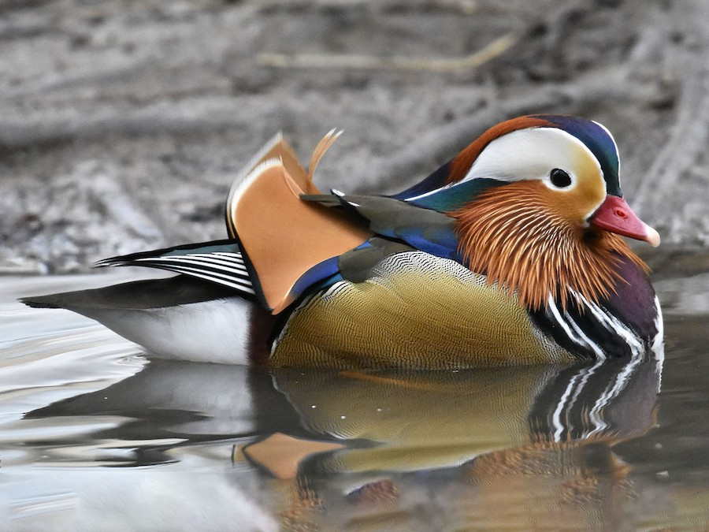
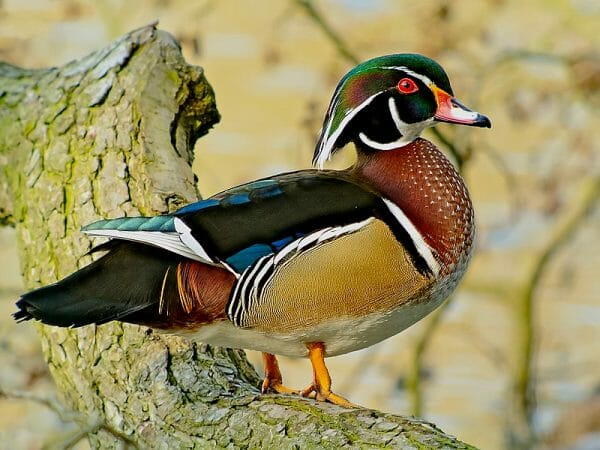
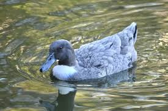

Indian Runner
A tall, slender breed known for its upright posture, resembling a penguin. Great for home settings due to their calm nature. These ducks are excellent foragers and can help control pests in the garden. They are known for their unique gait and can often be seen waddling or jogging about, creating a lively atmosphere. Indian Runners are highly active and enjoy a variety of activities, including swimming and running. They are also quite sociable, often forming strong bonds with other ducks and their human caretakers.
This breed is not only charming but also practical. Their foraging abilities allow them to thrive in free-range environments, helping keep your yard pest-free. They can adapt to various climates but prefer a warm and dry environment. Indian Runners are not as vocal as some other breeds, making them a good choice for quieter settings. When it comes to egg production, they lay medium-sized eggs that are known for their rich flavor, making them a great choice for those who enjoy home-cooked meals.

Cayuga
Has beautiful black plumage with a greenish sheen. A calm breed, often kept for its striking appearance. Cayugas are known to be excellent layers of medium to large eggs, which can be a great addition to your breakfast table. They are very friendly and can be quite affectionate with their owners, often following them around the yard. Their calm demeanor makes them great pets for families and children. Cayuga ducks are also known for their unique ability to change color as they mature, with younger birds exhibiting a more muted appearance.
In addition to their aesthetic appeal, Cayugas are hardy and can adapt to various climates. They thrive in environments where they can forage and swim, making them ideal for farm or homestead settings. Their calm nature means they generally get along well with other livestock. Cayugas also tend to be less prone to stress, which can result in better health and longevity. When properly cared for, they can live for several years, providing both companionship and productivity.

Pekin Duck
One of the most popular breeds, with white feathers and a friendly temperament. Ideal for families with children. Pekins are known for their fast growth rate and can be raised for meat production. They are also known to be quite social, often enjoying the company of other ducks and even humans. Their gentle nature makes them a favorite among backyard poultry enthusiasts, and they can adapt well to various living environments. Pekin ducks are very curious and enjoy exploring their surroundings, which can lead to amusing antics for their owners to enjoy.
In addition to their friendly demeanor, Pekins are excellent layers of eggs, typically producing around 200 eggs per year. Their eggs are large, with a rich flavor that many people prefer over store-bought options. Pekin ducks are also known for their good health and hardiness, making them a low-maintenance choice for new duck owners. They do well in both free-range environments and in coops, provided they have enough space to roam and forage. Overall, Pekins are a versatile breed that can provide both companionship and productivity.

Mandarin Duck
A highly decorative breed known for its vivid, colorful plumage. Perfect as a decorative bird for gardens or ponds. Mandarin ducks are often considered one of the most beautiful waterfowl species due to their striking appearance and elaborate feather patterns. They are relatively shy and prefer to be in a more peaceful environment, making them a delightful yet delicate addition to any water feature. These ducks thrive in pairs or small groups and are known for their unique courtship displays, which can be mesmerizing to watch.
Mandarin ducks are also unique in their nesting habits, often choosing tree cavities for their nests. This behavior makes them less common in domestic settings but adds to their charm as a decorative species. They prefer shallow water where they can forage for food and enjoy swimming. Their diet typically consists of aquatic plants, insects, and small fish. While they can be kept in captivity, they are best suited to environments that mimic their natural habitats, allowing them to exhibit their natural behaviors.

Wood Duck (Carolina Duck)
A stunning breed with bright, multicolored feathers. Friendly toward humans and often kept as an ornamental bird. Wood Ducks are unique in that they are one of the few species that nest in tree cavities, making them an interesting choice for bird enthusiasts. They are also excellent fliers and often enjoy perching in trees. Their vibrant colors and playful behavior make them a popular choice among duck lovers. Wood Ducks are known to have a gentle disposition, which allows them to coexist peacefully with other birds in the flock.
In addition to their beauty, Wood Ducks are excellent foragers and will search for a variety of foods, including seeds, fruits, and aquatic plants. Their diet is essential for their health and well-being, so providing them with a diverse range of food sources is beneficial. They thrive in environments with plenty of vegetation and access to clean water for swimming. When kept in captivity, it's important to give them enough space to roam and explore to keep them happy and healthy.

Swedish Blue
Features bluish-gray feathers with a white chest. Peaceful and easily adaptable to various living conditions. Swedish Blue ducks are known for their hardiness and can thrive in a variety of climates. They are good foragers and enjoy roaming around searching for insects and plants. Their calm nature and friendly demeanor make them great companions, and they can often be seen interacting playfully with their flockmates. Swedish Blues are also known for their good egg production, laying medium-sized eggs with a delightful flavor.
This breed is quite sociable and typically gets along well with other ducks and poultry. They are relatively easy to manage and can be kept in both free-range environments and coops. Their ability to adapt to different living conditions makes them suitable for both small and large-scale poultry operations. When raising Swedish Blues, providing them with access to water is essential, as they enjoy swimming and dabbling. Overall, they are a versatile breed that can enhance any backyard setting.

Duck Breeds and Their Average Weight
| Breed |
Average Weight (kg) |
| Indian Runner |
1.4 - 2.0 |
| Cayuga |
2.7 - 3.6 |
| Pekin Duck |
3.6 - 4.5 |
| Mandarin Duck |
0.4 - 0.5 |
| Wood Duck |
0.6 - 0.9 |
| Swedish Blue |
3.2 - 4.1 |